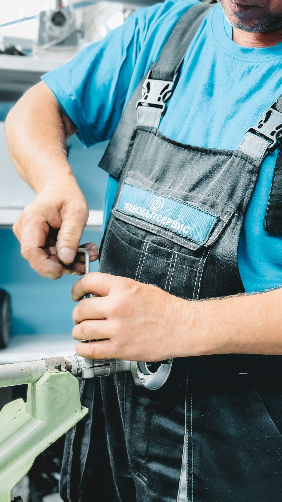

Bryan's plumbing company, built to scale with you.
A G Plumbing has grown from a two-person crew in 2000 to a team of 20+ licensed plumbers today — still answering the phone, still showing up when it matters most.
Illustrative stock photo (not A G Plumbing's own crew) — photo by Anıl Karakaya / Pexels.
Showed up during the February 2021 winter storm — and still does
A real customer review describes A G Plumbing responding quickly to a broken pipe during the historic February 2021 Texas winter storm, when demand for plumbers across the state spiked overnight. That's the kind of capacity a 20+ plumber team can offer that a one-person operation can't — scale, without losing the local, professional service Bryan has trusted since 2000.
Paraphrased from a real customer review on A G Plumbing's Google Business listing, verified 2026-09-21 — not a verbatim quote.

Full-service plumbing for homes & businesses
Real reviews describe water heater installs, storm emergency response, and scheduled repairs done efficiently and professionally. Exact services below are general examples for this trade — confirm your specific job by phone.
Water heater install & repair
New installs and repairs on both tank and tankless water heaters.
Emergency & storm response
Rapid response for burst pipes and weather-related plumbing emergencies.
Leak detection & repair
Finding and fixing leaks before they become bigger problems.
Drain & sewer service
Clearing and repairing drain and sewer lines — confirm by phone.
Residential & commercial
A team large enough to serve both homes and businesses across Bryan.
Scheduled maintenance
Reviewers repeatedly praise fast scheduling — ask about routine maintenance plans when you call.
Services above are general examples for a full-service plumbing company, informed by real customer reviews — call (979) 778-8500 to confirm exactly what your job needs.
From a two-man crew to Bryan's team of 20+ plumbers
Founded in Bryan
A G Plumbing opens with a two-person crew serving the local area.
Responds through the winter storm
Customers describe fast, professional emergency response during Texas's historic February freeze.
20+ licensed plumbers
A team of 20+ plumbers, still built on the same professional, efficient service reviewers have described for years.
A G Plumbing has operated in Bryan since 2000. What started as a two-person crew has grown into a team of more than 20 plumbers — a larger, more established operation than most local plumbing companies, but reviewers still describe the same things a small shop gets praised for: prompt scheduling, fair pricing, and technicians who show up and do the job right.
Sourced from A G Plumbing's public Google Business Profile and the build brief, verified 2026-09-21.
233 Marino Rd, Bryan, TX 77808
Hours
Verified on the shop's Google listing (2026-09-21): closed Monday, opens 7:30 AM Tuesday.
Full weekly hours aren't published — call (979) 778-8500 to confirm before you schedule.
Contact & directions
No independent website found — the Google Business listing is the company's only verified online presence.
4.8 stars across 60 reviews
A G Plumbing holds a 4.8-star rating on Google from 60 reviews. Reviewers consistently mention scheduling ease, water heater work, punctuality, and efficient, professional service — a strong track record for a team this size.
Individual Google review text will appear here once the site is connected live — this demo doesn't publish scraped review quotes.
Rating verified on A G Plumbing's public Google Business Profile, 2026-09-21.
Plumbing problem? Get a team built to handle it.
Call A G Plumbing — 20+ licensed plumbers, 26 years serving Bryan, and a 4.8-star track record.
233 Marino Rd, Bryan, TX 77808